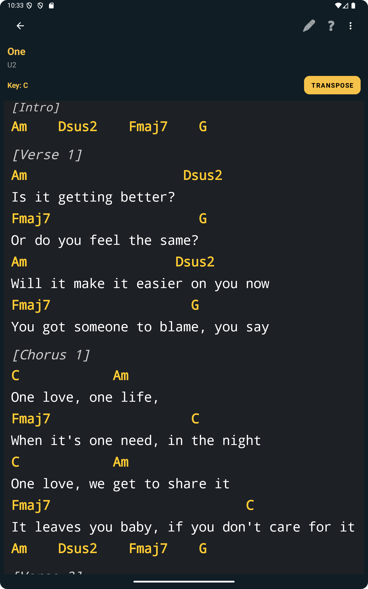
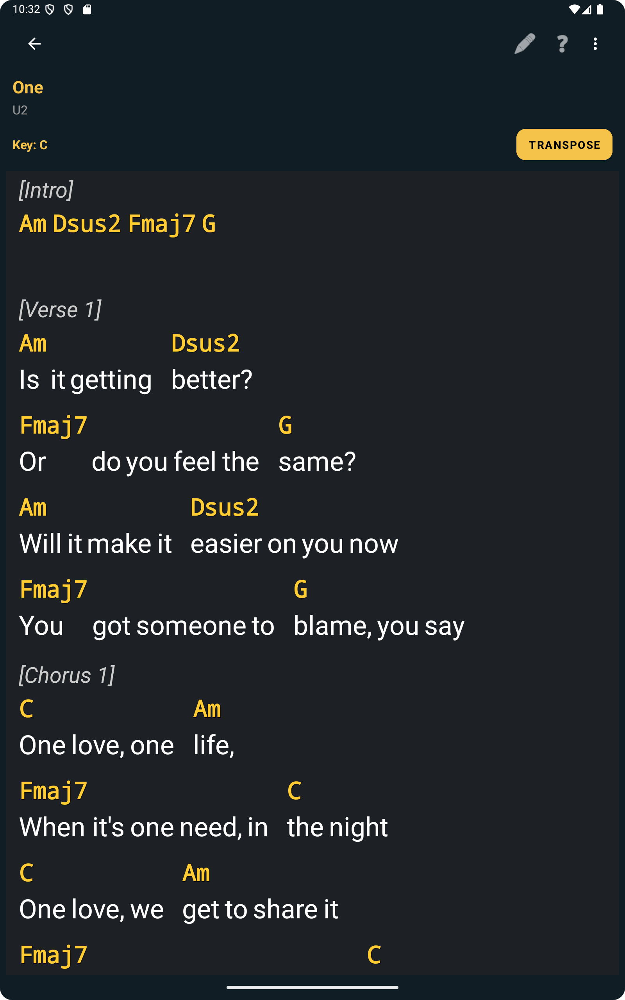

Why reading layout matters more than people think
Musicians usually notice the layout only when it starts getting in the way. A line wraps awkwardly, a chord feels too far from the words, or the screen looks more crowded than expected. In rehearsal, even small reading discomfort can slow you down because you spend more energy adapting to the screen instead of following the music.
That is why View Mode is useful. It is not about changing the song itself. It is about changing the presentation of songs with lyrics and chords so the reading experience fits the device and the situation more naturally. For some musicians, that means keeping a more traditional visual structure. For others, it means letting the layout adapt more freely to the screen.
Open View Mode from inside the song
You can change View Mode directly while the song is open, without leaving the reading screen.
The workflow starts inside a lyrics-and-chords song. From there, you can open the View Mode selector and choose between Auto view, Classic view, and Responsive view. This keeps the choice close to the actual reading moment instead of burying it in a settings screen you would have to search for later.
Auto view is useful if you want ChordFlow to decide the most suitable presentation automatically. In many cases, it can look very close to Classic view, which is why the most visible comparison is usually between Classic and Responsive.
The screenshot below is useful because it shows the feature exactly where it matters: while the song is already open and ready to read.

Classic view keeps a familiar reading structure
Classic view is usually the safest choice when you want the song to look closer to a traditional chart. It tends to feel stable and predictable, which helps if you are already used to reading lyrics with chords in a more conventional layout.
This is often useful when the song has clear phrasing and you want the visual relationship between words and chords to remain as familiar as possible. For musicians who prefer consistency while repeating sections during rehearsal, Classic view can feel calmer and easier to trust.
The next screenshot helps illustrate that more traditional reading style.

Responsive view adapts better to the screen
Responsive view is useful when you want the song layout to adapt more actively to the available screen space. On smaller screens or denser songs, that can make reading easier because the app adjusts the presentation instead of forcing the same visual structure everywhere.
At the same time, it is worth understanding one practical detail: because of that responsive architecture, the layout can sometimes show larger spaces between words. That is not a bug in the song itself. It is a visual consequence of how the responsive layout distributes the lyric line to keep the reading adaptable on screen.
In practice, some musicians will prefer that trade-off because the overall reading still feels lighter on mobile. Others may prefer Classic view for a more fixed look. The point of View Mode is that you can choose the one that feels better for that specific song and device.

Why this helps in real practice and rehearsal
The value of View Mode becomes obvious when you are actively using the song. If a certain layout feels harder to follow, you can adjust it immediately and keep going. That means fewer interruptions, less visual frustration, and a better chance of staying focused on timing, lyrics, and harmonic movement.
This is particularly helpful when you are preparing songs imported from different sources, as explained in the import article, because not every song will feel equally readable in the same mode. It also connects well with the article about choosing between chords-only and lyrics with chords, since View Mode only matters when you are already working in the lyrics-and-chords format.
Use the layout that fits the song, the screen, and the moment
There is no universal best mode. A simple song may feel fine in Auto or Classic. A denser song on a smaller screen may become easier to follow in Responsive. What matters is that you are not stuck with a single presentation style when the song would be easier to read another way.
That flexibility is part of what makes ChordFlow practical in rehearsal. The app does not force every lyrics-and-chords song into one fixed layout. It gives you room to adjust the reading experience to match how you actually work. And if those songs are already organized in a clean repertoire, as described in the setlist article, the whole practice flow becomes much smoother.
FAQ
Does View Mode work for every type of song?
No. View Mode is specifically useful for songs with lyrics and chords. It changes how that format is presented on screen.
What is the difference between Classic and Responsive view?
Classic view keeps a more traditional fixed-looking layout, while Responsive view adapts more actively to the screen and can sometimes introduce larger spacing between words.
Why can Responsive view show larger spaces between words?
That happens because the layout is adapting to the screen width. It is part of the responsive presentation logic rather than a change to the song content itself.
Can I switch view mode during rehearsal?
Yes. That is one of the practical strengths of the feature. You can change the view while the song is already open if another presentation feels easier to read.
Related Reading
Choose the view that helps you read with less effort
When lyrics with chords are displayed in a way that feels right for the screen and the song, rehearsing becomes more comfortable and less distracting. ChordFlow lets you adjust that reading experience instead of forcing the same layout every time.
Free · No ads · Works offline